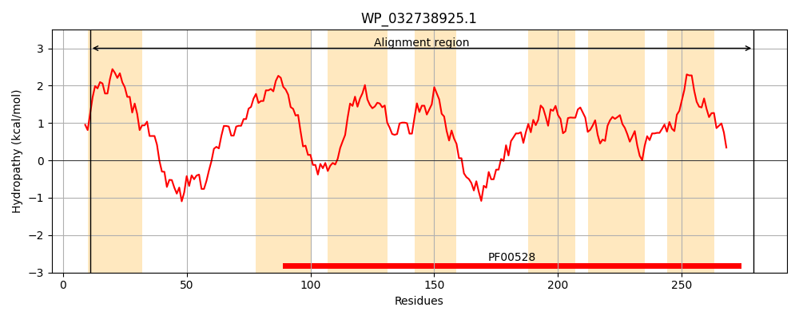
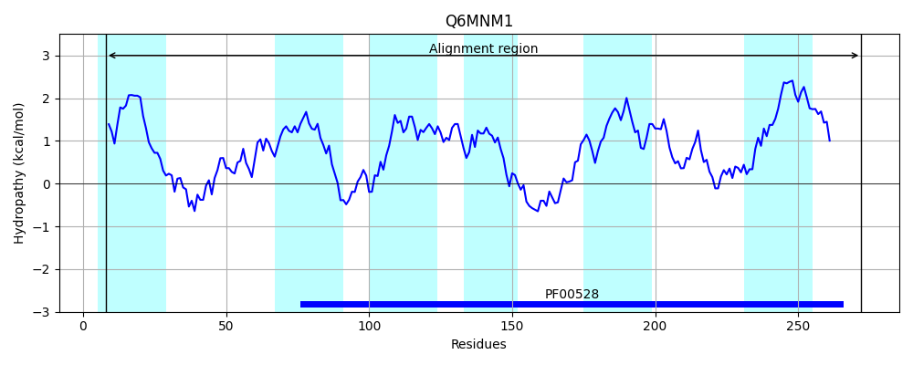
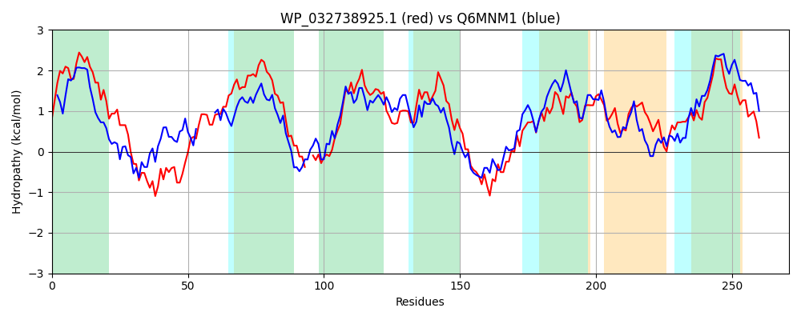

Hit Accession: Q6MNM1
Hit TCID: 3.A.1.1.51
Hit Description: gnl|BL_ORD_ID|14934 gnl|TC-DB|Q6MNM1|3.A.1.1.51 ABC-type Maltose/ Maltodextrin permease OS=Bdellovibrio bacteriovorus (strain ATCC 15356 / DSM 50701 / NCIB 9529 / HD100) OX=264462 GN=malG PE=3 SV=1
Mach Len: 271
e:0.000000
Query TMS Count : 7
Hit TMS Count: 6
TMS-Overlap Score: 5.350000
Predicted Substrates:CHEBI:10202;alpha,alpha-trehalose, CHEBI:23489;alpha-cyclodextrin, CHEBI:62009;maltoheptaose heptasaccharide, CHEBI:6668;maltose, CHEBI:6672;alpha-maltotriose, CHEBI:6671;maltotetraose, CHEBI:61996;maltopentaose pentasaccharide
BLAST Alignment:
Score: 377 , Bit scores: 149 bits, E-value: 7.1e-44, Alignment length: 271, Percentage identity: 33
Query: 11 YLAALAVAISILAPMLWLFLMSVSTTADLTRVPLEWLPRQWDFSRYGHLLSLAPGEPGALFLPALGNSLLVAAGATLVSLLLAIPAAFSFSRYP--GRDGWLYAGLGIYMVPPVAFVLPLYFILEHFGLLNTRSGLVLVYCSLIVPFLTWMVKNQFDTLPQDIEQAARLDGLRIWQVLLRITLPLAKPMLGAAALFGWLLAWDEFFYALLFTSNLAAQTLPVTIAGFTAGRATDDGLVAAVGILASVPPLLIAIWLQKTLVSGLTNGGSKG 279
+++ L ++ + P+L++ +S+ LE + F + L + FL + NSL+V+A TL+ + LA +A++ +RY GR+ L++ L M P +LP Y IL L+++ GL L+Y S +PF W +K +DT+P+++E+AA LDG W + +I LP++ P L ALF ++ +W E+ A + + TLP+ + F A AT GL AA ++ SVP L++ I + + LVSGLT G KG
Sbjct: 8 WISILLFSLFSIYPILYVLSVSLRPDNAFQTQSLEIIGPNASFKNFVDLFATTD------FLIWMRNSLVVSAATTLLGVALASTSAYALARYRFRGRNMMLFSLLMTQMFPATMLMLPFYIILSKLRLIDSFWGLFLIYSSTALPFCIWQMKAYYDTIPRELEEAALLDGCSKWMIFYKIILPVSSPALVITALFSFMSSWSEYVIAAVVLQDPQLYTLPLGLRSFQASLATQWGLYAAGALIVSVPVLILFISISRYLVSGLTMGSVKG 272 | Protein Hydropathy Plots: |
|---|
|  |  |
Pairwise Alignment-Hydropathy Plot:
|
|---|
|  |